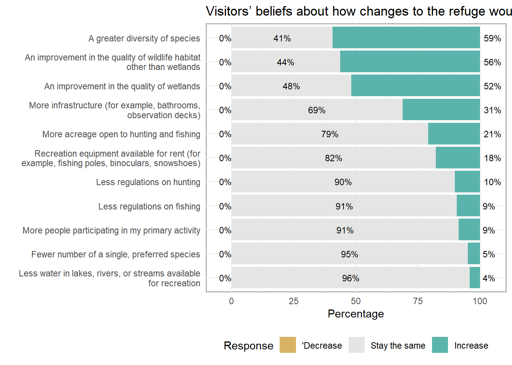

Appendix B: Survey Frequencies for Dungeness National Wildlife Refuge
Overall Satisfaction
Recreational Opportunities
Importance of Recreational Opportunities

Figure 4.1: How important are the recreation opportunities?
Satisfaction with Recreational Opportunities

Figure 4.2: How satisfied are you with the recreation opportunities?
Services and Facilities
Positive experiences are driven by first impressions of refuge facilities and people.
Importance of Facilities and Services
servicesImpTitle
Figure 4.3: How important are the items?
Satisfaction with Facilities and Services

Figure 4.4: Rate how satisfied you are with the way this refuge is managing each feature
Feeling Safe and Welcome
safeTitle 